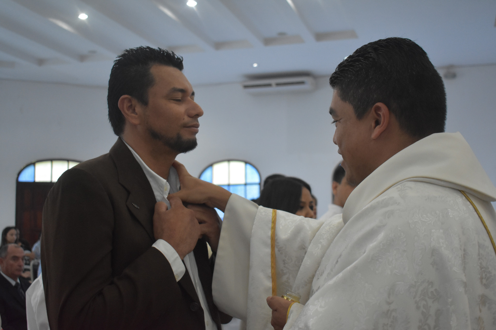
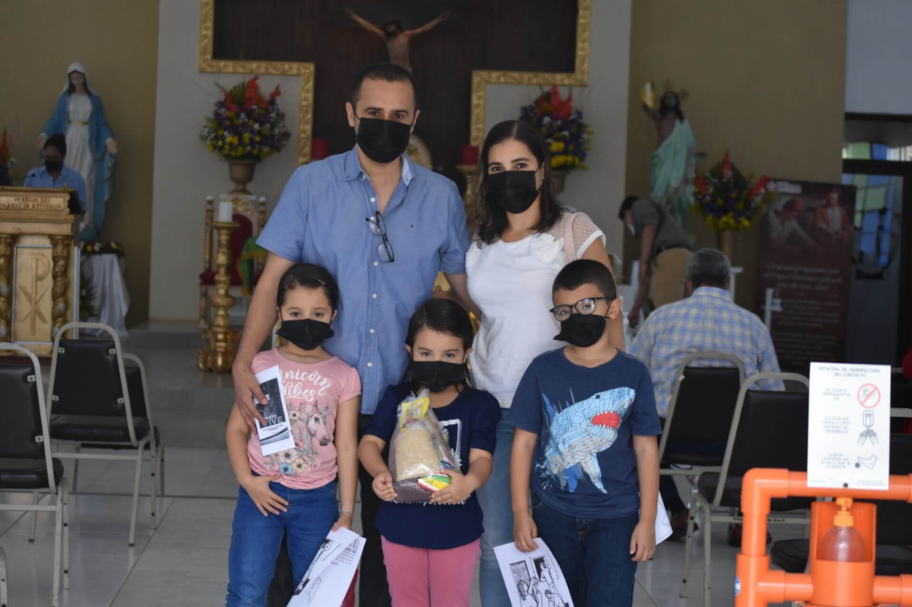

-

-
-

-

Horarios Santa Eucaristía
Estos horarios estan sujetos a cambios durante tiempo de COVID-19
Sede Parroquial
Lunes a Viernes: 7:00 AM, 5:00 PM, 7:00 PM
Sábados: 7:00 AM, 5:30 PM
Domingos: 9:15 AM, 11:00 AM, 5:00 PM, 7:00 PM
Altos de Loarque
Miércoles: 6:00 PM
Domingos: 9:00 AM
Yaguacire
Domingos: 7:00 AM
Las Mercedes
Sábados: 3:30 PM
Fuerza Aérea Hondureña
Domingos: 8:15 AM
Camino Neo-catecumenal
Sábados: 7:00 PM
Anota tus intenciones de Salud, Familia, Difuntos, Gratitud, Fe, Trabajo, Celebraciones
Si deseas anotar alguna intención para la Santa Eucaristía, escríbenos a nuestro Whatsapp indicando la fecha y hora en la que deseas que se lea tu intención.
Nuestros Sacerdotes
Pbro. Javier Eduardo Martínez
Párroco